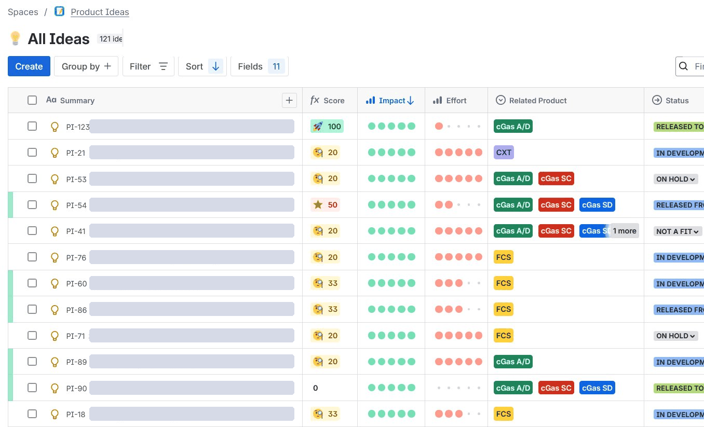

The Problem
Product ideas arrived through support calls, emails, and hallway conversations. There was no intake process, no framework for prioritizing what to build, and no clear owner of those decisions. Quality issues had the same problem. Field bugs and customer complaints came in through different channels with no consistent way to triage them. Engineering worked off whatever was most urgent that week, with no backlog, no story points, and no visibility into what was actually getting built or when.
What I Built
A full product innovation engine, designed from scratch, configured in Jira, and rolled out across engineering, sales, and leadership:
- Centralized intake. A single Product Ideas board consolidating submissions from forms, hallway conversations, customer calls, and direct field observation. One place instead of scattered inboxes.
- Objective scoring. Every idea gets an impact and effort score, an owner, and a status. It made prioritization transparent and easier to align on across teams.
- Lifecycle governance. A written SOP covering every stage from NEW IDEA to RELEASED TO MARKET, with defined approval gates and role responsibilities. The system runs without me.
- Sprint integration. Approved ideas flow directly into bi-weekly engineering sprints with story point estimation and KPI tracking. First time the team had a shared cadence.
The System


Results
Triage time dropped from up to 3 months to about one week, giving the team a real rhythm for the first time. Engineering throughput improved 19% over 17 consecutive sprints. The process now runs independently, adopted across engineering, sales, and leadership.
- Prioritization decisions briefed directly to the CEO, with full visibility from customer signal to strategic decision
- First structured product process in company history, from zero to fully operational
- 130+ ideas and 40+ bugs prioritized across 5 product lines
- SOP documented and in use, onboarding new team members without PM involvement
- Cross-functional launch coordination in Microsoft Planner, so sales, marketing, and production were ready on the day a feature shipped rather than after
What I Would Do Differently
I built the scoring model before enough people were using it. For the first few months, impact and effort were my estimates rather than the team's, which meant the scores reflected what I understood about the work instead of what engineering knew about it. A few items got ranked confidently and wrongly.
Scoring now happens with the lead engineer in the room, and the numbers hold up better. If I were starting again I would have run the first batch of ideas as a group exercise even though it would have been slower, because a prioritization framework is only worth what the people estimating against it believe.
Want the longer version?Happy to walk through the scoring model, the SOP, or the sprint KPIs.
Get in touch →